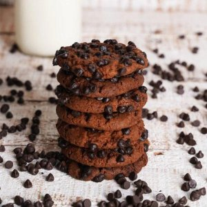

Chocolate Chip Cookies

Ingredients
- 2 1/4 cups all-purpose flour
- 1/2 teaspoon baking soda
- 1 cup unsalted butter, softened
- 1/2 cup granulated sugar
- 1 cup packed brown sugar
- 1 teaspoon vanilla extract
- 2 large eggs
- 2 cups semisweet chocolate chips
Instructions
- Preheat oven to 350°F (175°C). Line baking sheets with parchment paper.
- In a small bowl, combine flour and baking soda. Set aside.
- In a large mixing bowl, cream together softened butter, granulated sugar, brown sugar, and vanilla extract until smooth.
- Beat in eggs, one at a time, until well blended.
- Gradually add the flour mixture to the creamed mixture and mix well.
- Stir in chocolate chips.
- Drop dough by rounded tablespoons onto prepared baking sheets.
- Bake for 8 to 10 minutes, or until golden brown.
- Remove from oven and let cool on baking sheets for 5 minutes, then transfer to wire racks to cool completely.
- Enjoy your delicious homemade chocolate chip cookies!